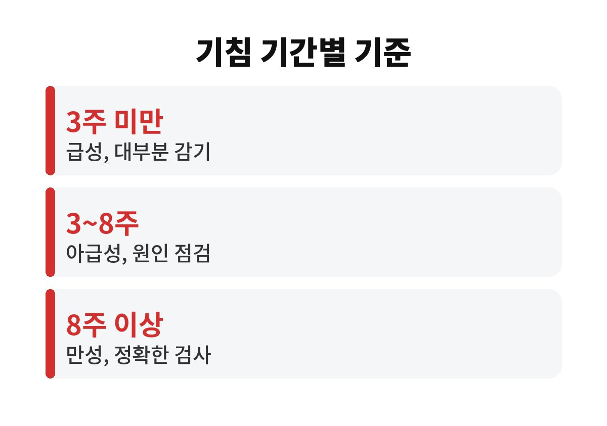
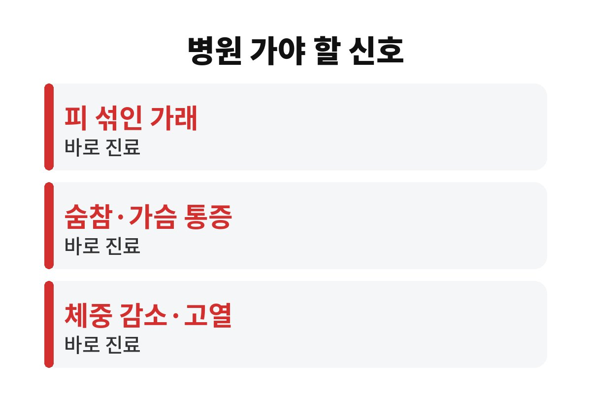

기침 오래갈 때는 보통 3주를 하나의 기준으로 삼으며, 3주 이상 이어지면 단순 감기가 아닐 가능성을 따져 봐야 한다. 감기려니 하고 11월 내내 버티고 있는 직장인이라면, 내 기침이 어느 단계인지 궁금하지 않은가?
날씨가 쌀쌀해지면 주변에서 콜록거리는 소리가 부쩍 늘어난다. 대부분 며칠 지나면 나아지지만, 기침만 유독 오래 남는 사람들이 있다. 열이나 콧물은 다 가라앉았는데 기침만 남았다면 한 번쯤 점검해 볼 필요가 있다.

의료계에서는 기침 기간을 크게 세 단계로 나누어 설명하는 경우가 많다. 3주 미만이면 급성, 3주에서 8주 사이면 아급성, 8주 이상이면 만성 기침으로 구분한다. 이 기준만 알아도 지금 내 상태가 어디쯤인지 대략 가늠할 수 있다.
급성 기침은 대부분 감기 같은 호흡기 감염이 원인이다. 감기가 다 나은 뒤에도 기도가 예민해져 기침이 몇 주 남는 경우도 흔하다. 그래서 2주쯤 이어졌다고 바로 걱정할 일은 아니다. 다만 3주를 넘기고도 줄어들 기미가 없다면 이야기가 달라진다.
오래 이어지는 기침의 원인으로는 알레르기성 비염으로 콧물이 목 뒤로 넘어가는 후비루, 기관지 천식, 위산이 올라오는 역류성 식도염 등이 흔히 거론된다. 흡연이나 미세먼지, 건조한 실내 공기도 기침을 오래 끌게 만드는 요인이다.
특히 누웠을 때나 밤, 새벽에 기침이 심해진다면 후비루나 역류성 식도염, 천식을 의심해 볼 수 있다. 식사 후 신물이 올라오거나 목에 뭔가 걸린 느낌이 함께 있다면 더욱 그렇다. 이런 경우에는 기침약만 먹어서는 좋아지기 어렵다.
기침과 함께 피가 섞인 가래가 나오거나, 숨이 차고 가슴이 아프거나, 이유 없이 체중이 줄거나, 열이 계속 나는 경우는 기간과 상관없이 빨리 진료를 받는 것이 좋다. 쉰 목소리가 오래가는 것도 확인이 필요한 신호다.
고령의 부모님이 밤마다 기침을 하신다면 더 신경 써야 한다. 나이가 들수록 폐렴 같은 감염이 겉으로 심하지 않게 시작하는 일이 있기 때문이다. 기침이 오래간다는 이유만으로도 진료를 권하는 것이 안전하다.
가장 먼저 할 일은 실내 습도를 알맞게 유지하는 것이다. 보통 40~60% 정도가 적당하다고 알려져 있다. 미지근한 물을 자주 마셔 목을 촉촉하게 해 주는 것도 도움이 된다. 담배를 피운다면 기침이 남아 있는 동안만이라도 줄이는 것이 좋다.
자기 전에 과식하거나 야식을 먹는 습관은 역류를 부추겨 밤 기침을 키울 수 있다. 베개를 조금 높여 눕는 것도 방법이다. 이런 생활 습관을 바꿔도 3주 이상 나아지지 않는다면 호흡기내과나 이비인후과를 찾는 편이 현명하다.
기침이 오래갈 때 흔히 하는 실수가 있다. 예전에 먹던 기침약이나 항생제를 남겨 두었다가 다시 먹는 것이다. 원인이 다르면 같은 약이 듣지 않을 뿐 아니라 진단만 늦어질 수 있다. 약은 증상과 원인에 맞춰 처방받아 먹는 것이 안전하다.
병원에 갈 때는 언제부터 기침이 시작되었는지, 하루 중 언제 심한지, 가래가 있는지, 먹는 약이 있는지를 미리 적어 가면 진료가 훨씬 수월하다. 혈압약 중 일부는 마른기침을 부작용으로 일으킬 수 있어서 복용 중인 약 이름도 꼭 알려야 한다.

마스크를 쓰는 것도 도움이 된다. 찬 공기가 한꺼번에 기도로 들어가는 것을 막아 주고, 주변 사람에게 기침이 퍼지는 것도 줄여 준다. 특히 출퇴근길 지하철처럼 사람이 많은 곳에서는 기침이 오래가는 동안 마스크를 쓰는 편이 서로에게 이롭다.
기침이 3주 미만이면 지켜볼 수 있지만, 3주를 넘기면 원인을 찾아야 한다. 8주를 넘기면 만성으로 보고 정확한 검사가 필요하다. 위험 신호가 있다면 기간을 따지지 말고 바로 진료를 받아야 한다. 지금 내 기침은 며칠째인지 오늘 한 번 세어 보면 좋겠다.
도움이 되셨다면 구독해 주세요. 다음 글에서 또 생활 속 건강 정보를 전해 드리겠습니다.
본 글은 일반적인 건강 정보이며 진단이나 치료를 대체하지 않는다. 증상이 있다면 반드시 전문의와 상담해야 한다.